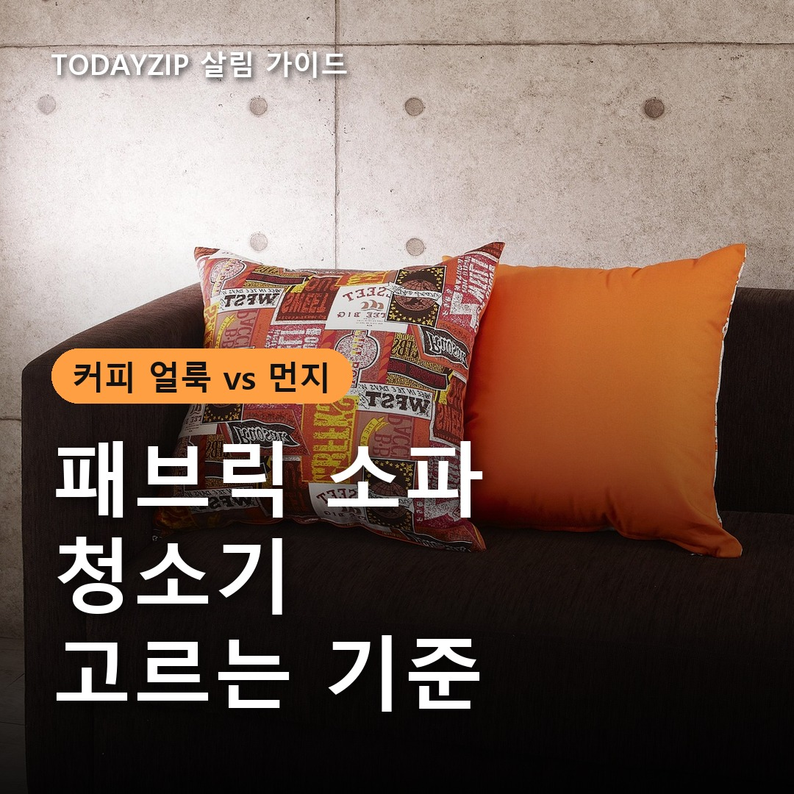
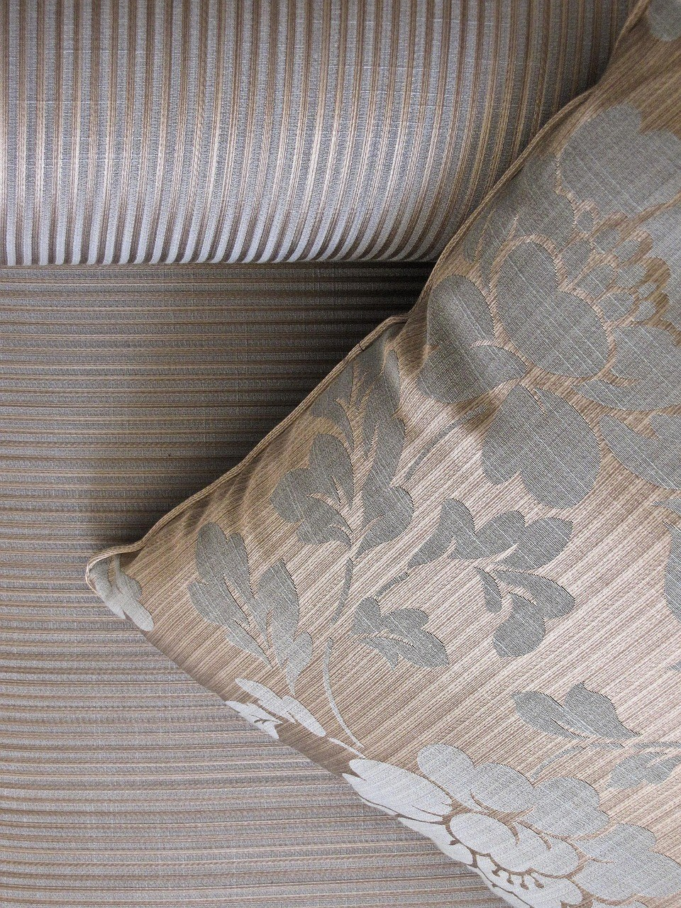
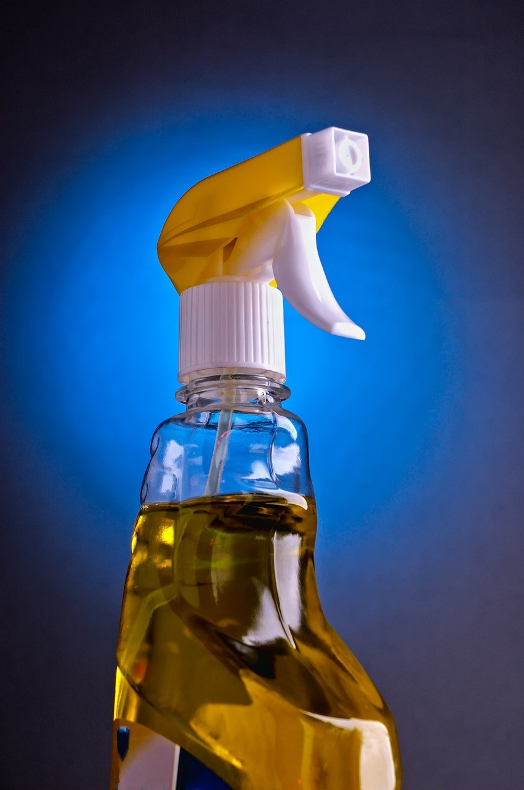
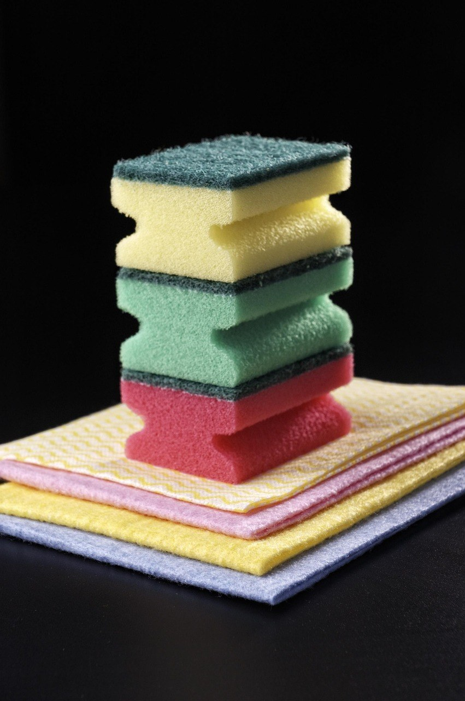

이 포스팅은 쿠팡 파트너스 활동의 일환으로, 이에 따른 일정액의 수수료를 제공받습니다.
[사진 1: 썸네일]
소파에 커피를 쏟았는데 물티슈로 문지를수록 얼룩이 더 넓어진 적 있지 않나요? 패브릭 소파는 포근한 대신 먼지와 얼룩이 천 속으로 스며들어서, 겉만 닦아서는 잘 빠지지 않아요.
그래서 패브릭 소파 청소기를 찾아보면 습식 청소기, 침구청소기, 무선청소기 헤드까지 종류가 많아 헷갈려요. 이 글에서는 제품 순위 대신 우리 집 고민이 '얼룩'인지 '먼지'인지에 따라 고르는 기준을 정리해 드릴게요.
[사진 2]
📷 [직접 찍은 사진 넣기: 소파 방석을 들어 아래쪽 케어 라벨을 찍은 모습]
모든 패브릭 소파를 물로 닦을 수 있는 건 아니에요. 방석 아래나 소파 밑면에 붙은 케어 라벨을 보면 물 세척이 되는지, 용제만 써야 하는지, 진공 흡입만 해야 하는지 표시된 경우가 많아요.
물 세척이 안 되는 소파라면 습식 청소기를 사도 쓸 곳이 없어요. 라벨이 없다면 눈에 안 띄는 곳에 물을 조금 묻혀 색이 빠지거나 물 자국이 남는지 먼저 시험해 보세요.
✍️ [내 경험 한두 줄: 우리 집 소파는 어떤 소재이고, 주로 어떤 얼룩이 생기나요? (음료/아이 낙서/반려동물 털 등)]
패브릭 소파 청소기는 물을 뿌리고 바로 빨아들이는 습식, 두드리며 먼지를 빨아들이는 건식 침구청소기, 무선청소기에 끼우는 헤드로 나뉘어요.
| 구분 | 습식(물 분사+흡입) | 건식 침구청소기 | 무선청소기 헤드 |
|---|---|---|---|
| 잘하는 것 | 음료·음식 얼룩 | 먼지·각질·털 | 겉면 먼지·털 |
| 못하는 것 | 넓은 면 먼지 | 스며든 얼룩 | 얼룩, 깊은 먼지 |
| 사용 후 | 말리는 시간 필요 | 바로 앉아도 됨 | 바로 앉아도 됨 |
| 관리 | 오수통 매번 세척 | 먼지통 비우기 | 헤드 브러시 털기 |
| 이런 집에 | 아이·반려동물, 얼룩 잦은 집 | 먼지가 신경 쓰이는 집 | 청소기가 있고 가끔만 할 때 |
[사진 3]
습식 패브릭 소파 청소기는 쿠팡에서 10만 원 안팎부터 20만 원대까지 다양하게 보여요(판매처·시점마다 달라요). 가격보다 아래 항목이 우리 집에 맞는지가 더 중요해요.
건식 침구청소기는 소파 표면을 두드려 천 속 먼지를 띄운 뒤 빨아들이는 방식이 많아요. 흡입력은 Pa나 W로 적혀 있는데, 단위가 제품마다 달라 숫자만으로 비교하기 어려워요.
같은 단위끼리만 비교하고, 먼지통이 투명한지, 필터를 물로 씻을 수 있는지를 함께 보세요.
[사진 4]
📷 [직접 찍은 사진 넣기: 소파 옆 창문을 열어 둔 거실 모습]
얼룩이 생기면 먼저 마른 천으로 눌러 물기를 빼고, 문지르지 마세요. 습식 청소기는 바깥쪽에서 안쪽으로 짧게 분사하고 바로 빨아들이는 걸 반복하면 번짐이 줄어요.
물을 많이 쓰면 쿠션 속까지 젖어 냄새나 곰팡이가 생길 수 있어요. 청소 후에는 창문을 열어 자연 건조하고, 덜 마른 채 앉지 않는 게 좋아요.
✍️ [내 경험 한두 줄: 소파 청소는 보통 얼마 만에, 어떻게 하고 있나요?]
Q. 스팀청소기로 패브릭 소파를 닦아도 되나요?
A. 스팀은 모든 소재에 맞는 방법이 아니에요. 소파 라벨과 스팀청소기 설명서에서 패브릭 사용이 가능한지 먼저 확인하세요.
Q. 헤어드라이어로 빨리 말려도 될까요?
A. 강한 열은 얼룩 자국을 굳히거나 천을 상하게 할 수 있어요. 창문을 열거나 선풍기 바람으로 자연 건조하는 쪽이 안전해요.
정리하면, 음료·음식 얼룩이 고민이면 습식, 먼지와 털이 고민이면 건식 침구청소기나 무선청소기 헤드부터 보세요. 어떤 패브릭 소파 청소기든 소파 라벨에서 물 세척이 되는지 먼저 확인하는 게 가장 중요해요.
여러분 집 소파는 어떤 얼룩이 제일 골치인가요? 나만의 소파 관리 팁이 있다면 댓글로 나눠 주세요.
인스타그램 @todayzip.info 에서 살림 꿀팁을 30초 영상으로도 볼 수 있어요.
이 포스팅은 쿠팡 파트너스 활동의 일환으로, 이에 따른 일정액의 수수료를 제공받습니다.